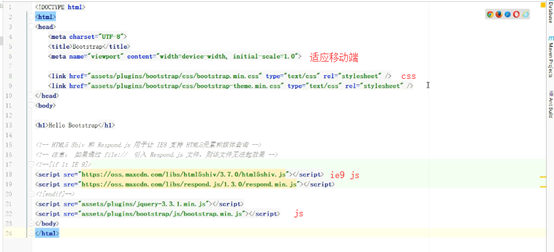

字体是矢量的:不失帧
前端页面可用于android访问
优点:移动设备优先
支持所有浏览器(360不算浏览器)
自适应屏幕大小
目录结构:
若浏览器环境变化,引入js
<link href="assets/plugins/bootstrap/css/bootstrap.min.css" type="text/css" rel="stylesheet"/>
<linkhref="assets/plugins/bootstrap/css/bootstrap-theme.min.css" type="text/css" rel="stylesheet"/>
<script src="assets/plugins/jquery-3.3.1.min.js"></script>
<script src="assets/plugins/bootstrap/js/bootstrap.min.js"></script>

1,table ,加载完所有,显示表格
2,div+css,加载一点,显示一点:操作难度大
媒体查询,(渐进增强:向上兼容)内容先显示
语法:@media 媒体类型 and(媒体特性:作用的范围){你的样式}
@media screen and (max-widthj:480px){
.a{display:none} //当小于480px时样式起作用
}
加入!important可强制生效,当(用style)更改bootstrap的css时,即会失效
矢量图标:bootstarp本身已过时,可扩展,找到font加入对应css
https://icons8.com/line-awesdome